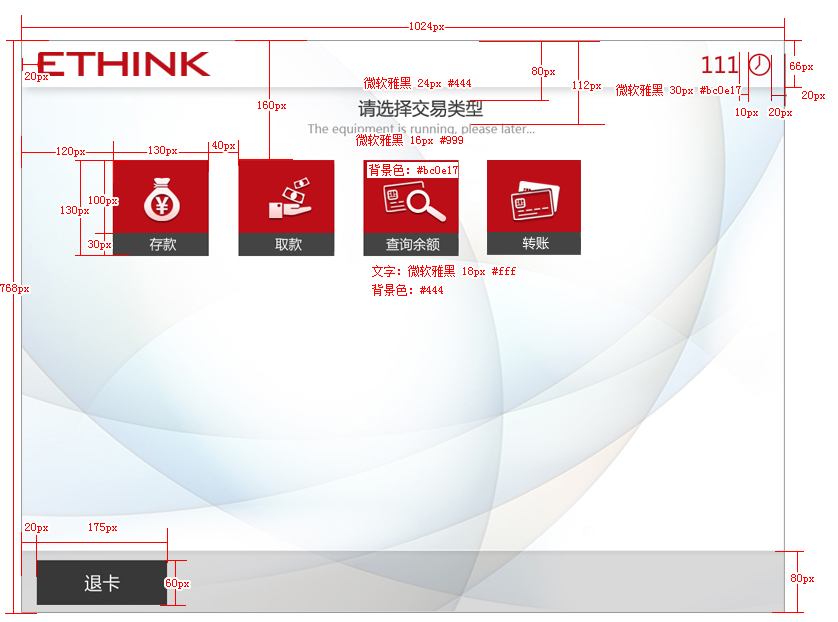

描述
启动初始界面后展示的界面。
示意图
交易选择界面

行为状态
- 刷卡、刷折、插卡、插折可进入次交易界面；
- 交易界面提示语言是否具有英文翻译，应根据客户要求进行设置，如无英文翻译则以1px直线分隔；

- 最左侧交易按钮距界面左侧边界最小间距为120px，最右侧交易按钮距界面右侧边界最小间距为120px
交易按钮排列规则
- 仅有一个交易按钮时（在第一行居中显示）
- 有两个交易按钮时（在第一行居中显示，间距为40px）
- 有三个交易按钮时（在第一行居中显示，间距为40px）
- 有四个以上交易按钮时（距左侧边界120px开始排列，间距为40px）
- 排列两行以上时（行间距为30px）
- 超出界面承载时（出现分页器）详情请看“使用指南”


使用指南
- 虽然交易按钮超出界面显示时，可进行分页显示，但这种展示方式不利于用户操作和查看，建议开发人员优化交易层级，尽量不出现分页。